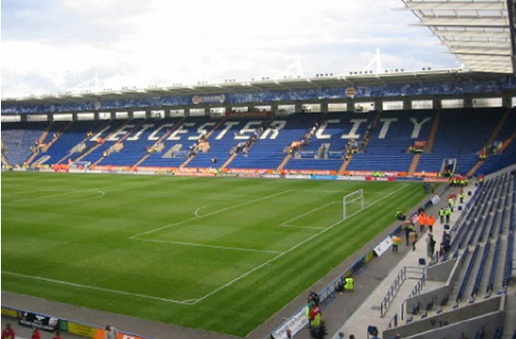

Leicester City Football Club is an English professional football club based in Leicester in the East Midlands. The club competes in the Premier League, the top division of England's football league system, and plays its home matches at the King Power Stadium.The club was founded in 1884 as Leicester Fosse F.C., playing on a field near Fosse Road. They moved to Filbert Street in 1891, were elected to the Football League in 1894 and adopted the name Leicester City in 1919. They moved to the nearby Walkers Stadium in 2002, which was renamed the King Power Stadium in 2011.
Leicester won the 2015–16 Premier League, their first top-level football championship. They are one of only seven clubs to have won the Premier League since its inception in 1992. A number of newspapers described Leicester's title win as the greatest sporting shock ever; multiple bookmakers had never paid out at such long odds for any sport. As a result, the team was dubbed "The Unbelievables", a spin-off harking back to Arsenal's undefeated team "The Invincibles". The club's previous highest finish was second place in the top flight, in 1928–29, then known as the First Division.Throughout their history, Leicester have spent all but one season in the top two divisions of English football. They hold a joint-highest seven second-tier titles (six Second Division and one Championship). The club have been FA Cup finalists four times, won the League Cup three times, and competed in four European campaigns.
The King Power Stadium (also known as Filbert Way or Leicester City Stadium due to UEFA sponsorship regulations and formerly known as the Walkers Stadium) is a football stadium in Leicester, England. It is the home stadium of Premier League side Leicester City. The all-seater stadium opened in 2002 and has a capacity of 32,261, the 20th largest football ground in England. It is named after travel retail group King Power, a company owned by the club's owners. The stadium was officially opened by former Leicester striker Gary Lineker on 23 July 2002. He used a giant pair of scissors to cut a ribbon on the pitch after arriving at the stadium in a Walkers lorry. The first game at the new stadium was a friendly against Basque team Athletic Bilbao, on 4 August 2002. The game finished 1–1, with Tiko scoring the first goal at the stadium, and Jordan Stewart scoring Leicester's first goal. The attendance was approximately 24,000 (no official figure was recorded due to a computer problem). The first competitive match took place six days later and Leicester beat Watford 2–0 in front of a near-capacity crowd of 31,022.
This Leichester City squad in Premier League season was initially in top 4 but as the end start approaching after the lockdown, they lost there form and end up at 5th position. The 2019–20 season was Leicester City's 115th in the English football league system and their 52nd (non-consecutive) season in the top tier of English football.[1] This was their sixth consecutive season in the Premier League. They also competed in the FA Cup and EFL Cup. The season covered the period from 1 July 2019 to 26 July 2020. Leicester won the Premier League on 2 May 2016 after Tottenham threw away a 2–0 lead against Chelsea, drawing 2–2 at the "Battle of Stamford Bridge". This completed the fastest seven-year rise to the title except for Ipswich Town in 1962, and Leicester faced a far more unequal top tier than Ipswich did back then. Bookmakers thought Leicester's victory was so unlikely that Ladbrokes and William Hill offered odds of 5,000–1 for it at the start of the season.
Jamie Richard Vardy (born 11 January 1987) is an English professional footballer who plays as a striker for Premier League club Leicester City and the England national team.After being released by Sheffield Wednesday at the age of sixteen, Vardy began his senior career with Stocksbridge Park Steels, breaking into the first team in 2007 and spending three seasons there before joining Northern Premier League club FC Halifax Town in 2010. Scoring 25 goals in his debut season, he won the club's "Player's Player of the Year" award and then moved to Conference Premier club Fleetwood Town in August 2011 for an undisclosed fee. On 17 May 2012, it was announced that Vardy would be signing for Championship club Leicester City ahead of the 2012–13 season, for a reported fee of £1 million, a non-League record, which could potentially be worth up to £1.7 million with add-ons. The next day, he signed on a three-year contract until June 2015. On 14 August, Vardy made his debut for Leicester against Torquay United in the first round of the League Cup, playing the entirety of the match at Plainmoor and heading the final goal in a 4–0 win. Four days later he made his Football League debut at the King Power Stadium, a 2–0 win over Peterborough United in which he set up a goal for Andy King. He scored his first league goal in a 2–1 away defeat to Blackburn Rovers on 25 August.
Çağlar Söyüncü (born 23 May 1996) is a Turkish professional footballer who plays as a defender for Premier League club Leicester City and the Turkey national team. Söyüncü's first senior professional team was the Turkish second division Altınordu. In the summer of 2016, he joined SC Freiburg of Germany's Bundesliga, before moving to Leicester City of the English Premier League in 2018. He made his senior national team debut in 2016. On 9 August 2018, Söyüncü joined English Premier League side Leicester City on a five-year contract. Söyüncü had his Premier League debut on 27 October 2018 at the King Power Stadium where Leicester shared points with West Ham United following the final score of 1–1. Söyüncü scored his first Premier League goal in Leicester's 11th game of the 2019–20 season on 3 November 2019 against Crystal Palace at Selhurst Park, a 2–0 win. In November 2015, he was called up to Turkey national football team by coach Fatih Terim, following the injury of central defender Serdar Aziz. Söyüncü is the first Altınordu player called up to Turkey national football team after 78 years, since Sait Altınordu, the iconic player of the club, was selected in 1937.[19] He is also the first player called up to national team from any İzmir-based football clubs since 1997. On 17 November 2015 Söyüncü was a reserve for the a friendly game against Greece but stayed on the bench and did not actually get a chance to play. Possessing leadership attributes, Söyüncü is good at playmaking, dribbling and timing. Standing at 1.87 m (6 ft 2 in), he is strong in the air. In 2016, he stated that his idol is Spanish defender Carles Puyol and he admires German international Mats Hummels.
Adrien Sébastien Perruchet da Silva (born 15 March 1989), known as Adrien Silva, is a Portuguese professional footballer who plays for Monaco on loan from Leicester City, and the Portugal national team. A central midfielder, he is known for his dribbling and passing skills. He began his career with Sporting, making his first-team debut at the age of 18. In ten years with the club he played 237 games and scored 39 goals, and won the 2008 and 2015 Taça de Portugal trophies. He had loan spells with Maccabi Haifa and Académica, where he won the Portuguese Cup again. In 2018 he moved to Leicester, and joined Monaco on loan in January 2019. Silva was officially registered on 1 January 2018, and made his debut that same day as a late substitute in a 3–0 win at home to Huddersfield Town in the Premier League. He was given the number 14 jersey, referring to his transfer difficulties. In a 2–0 defeat of Watford on 20 January, he came on for Jamie Vardy in the 89th minute and provided the assist for Riyad Mahrez's goal in stoppage time.